1.Abstract
Scholarly HTML is a domain-specific rich document format built entirely on
open standards that enables the interoperable exchange of scholarly articles in a manner that is compatible with off-the-shelf browsers..
2.Despre proiect
Monitoring Prison este o aplicatie care monitorizeaza detinutii dintr-un anumit penitenciar sau dintr o anumita detentie.
Cu Monitoring Prison oricine doreste poate vizita detinuri online printr-o simpla completare a unui formular bazat pe scopul intalnirii.
Pentru a putea evita recompletarea datelor pentru anumite formulare de vizita sugeram inregistrarea
3.Pagini inainte de logare
3.2.Homepage

Aceasta este pagina principala a aplicatiei. Userii pot vedea o lista de citate motivationale, si pot genera un citat nou.
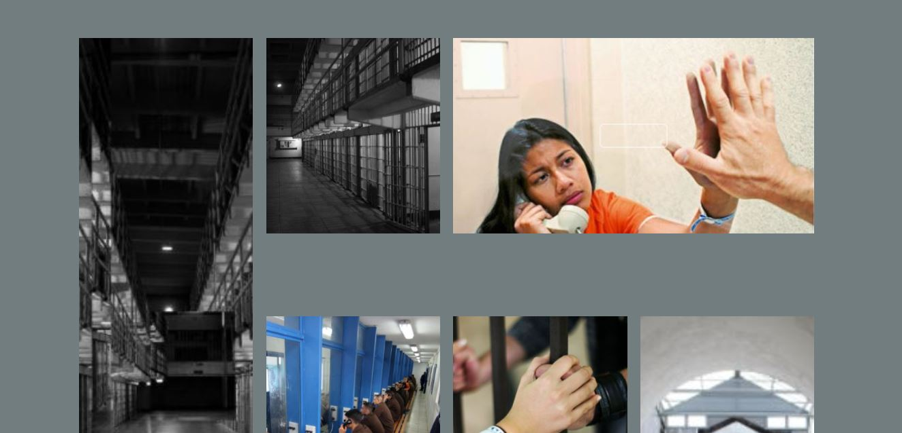Userii pot vedea o galerie de imagini.
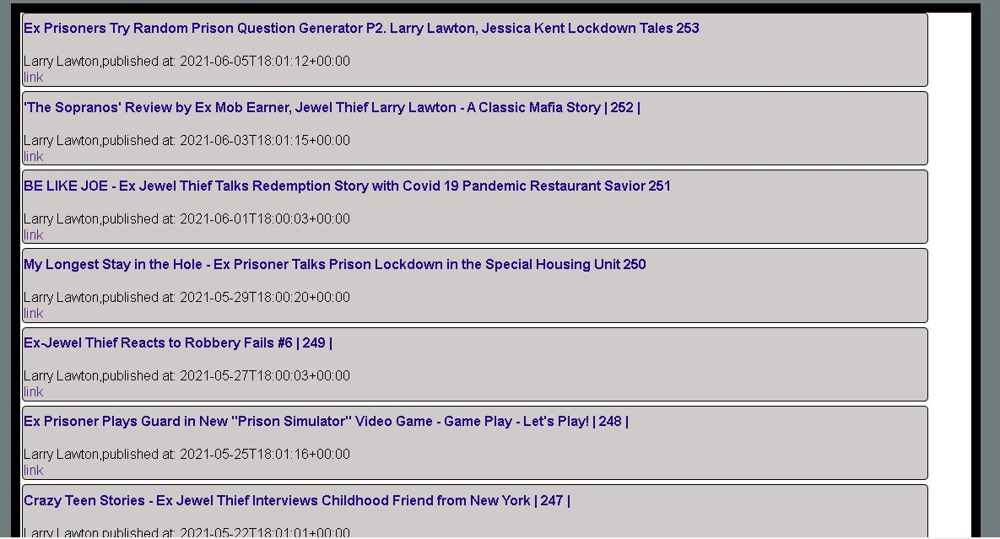Userii pot vedea noutati:titlu,descriere,link de la ultimele 10 vloguri de la un canal de youtube despre inchisoare.
3.3.Register
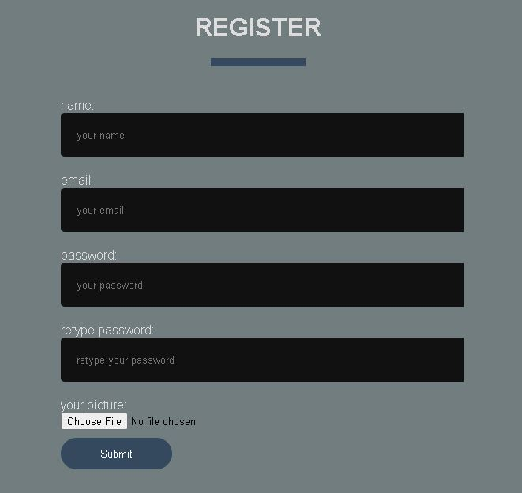Aceasta este pagina de creare cont. Pentru a crea un cont,trebuie sa introducem obligatoriu:
- User Name
- Email valid
- Parola
- Repetare parola
- Imagine profil
3.4.Login
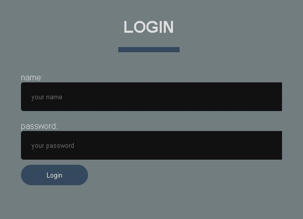Aceasta este pagina de conectare la cont. Pentru a intra in cont,trebuie sa introducem obligatoriu:
- User Name
- Parola
3.5.Contact us
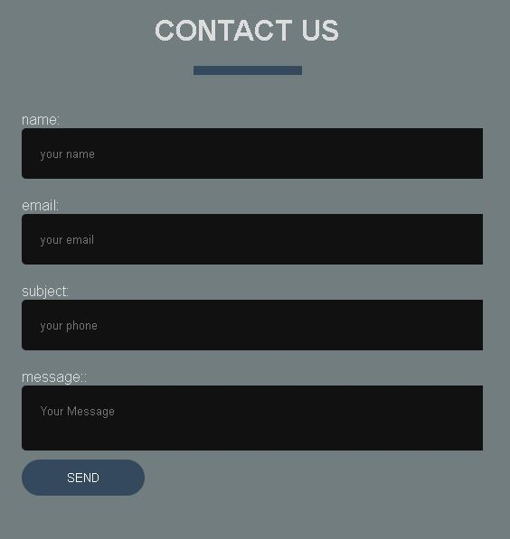Aceasta este pagina de contactare admin.Aici putem transmite un mesaj
sau cere informatii de la admin.
Pentru a trimite un mesaj,trebuie sa introducem obligatoriu:
- User Name
- Email valid
- Subiect
- Mesaj
4.Pagini dupa logare
4.2.New Visit
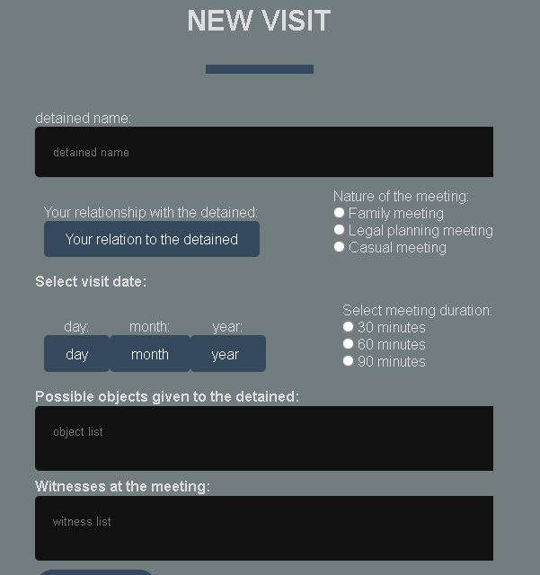Pentru a crea o noua vizita,trebuie sa completam:
- Nume detinut existent
- Relatia cu detinutul
- Scopul vizitei(de familie,consultare legala,de prietenie)
- Data vizitei
- Durata vizitei
- Posibile obiecte ce vor fi date detinutului
- Lista de martori
4.3.My visits
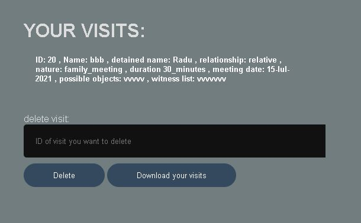Avem acces la colectia noastra de vizite,putem sterge o anumita vizita dupa id,sau putem downloada in format csv lista vizitelor noastre.
4.4.Logout
Putem iesi din cont,dar nu vom avea acces la lista de vizite si nu vom putea crea o vizita noua.
5.Pagina admin
5.2.Vizualizare users
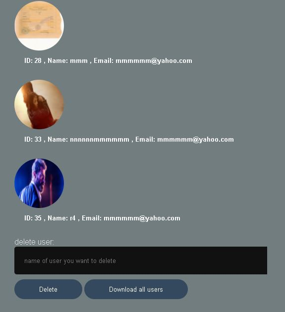
Administratorul are acces la lista de useri,poate
sterge un anumit cont dupa username,
si poate downloada lista de useri.
Cand un user este sters,se vor sterge si toate vizitele lui.
5.3.Vizualizare vizite
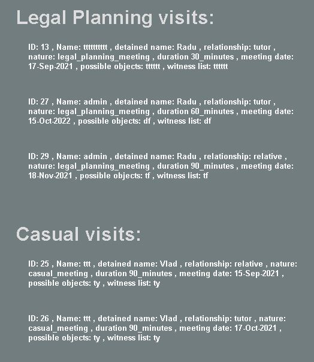 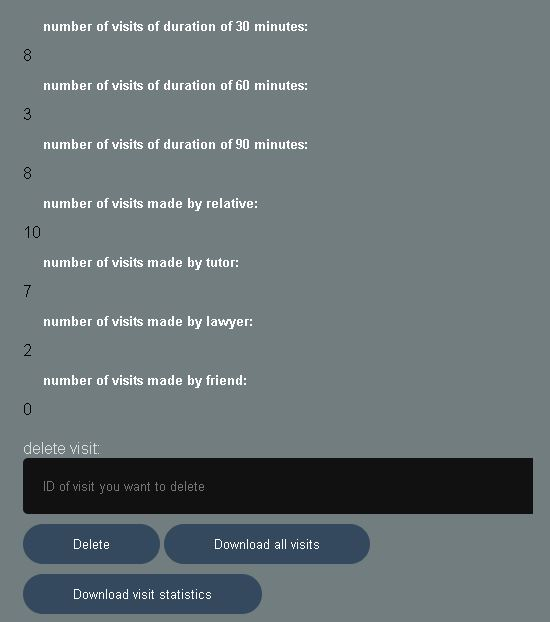
Administratorul are acces la lista de vizite,poate
sterge o anumita vizita dupa ID,poate vizualiza
statistici despre vizite,
poate downloada
statistici despre vizite,si poate downloada lista de vizite in format csv.
5.2.Vizualizare detinuti
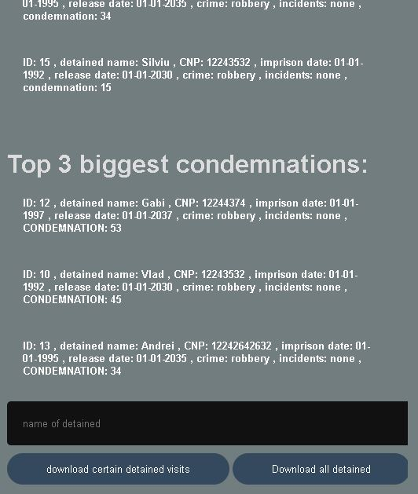Administratorul are acces la lista de detinuti,poate downloada lista de vizite a unui detinut anume,si poate downloada lista de detinuti.